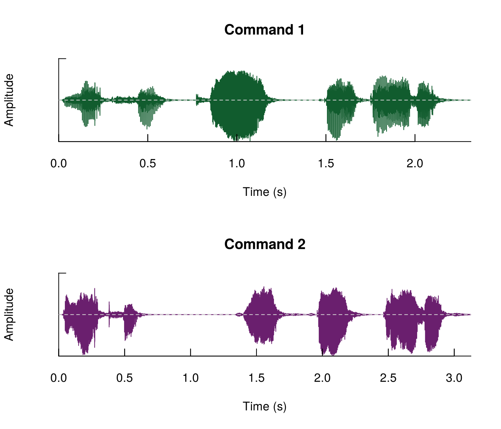
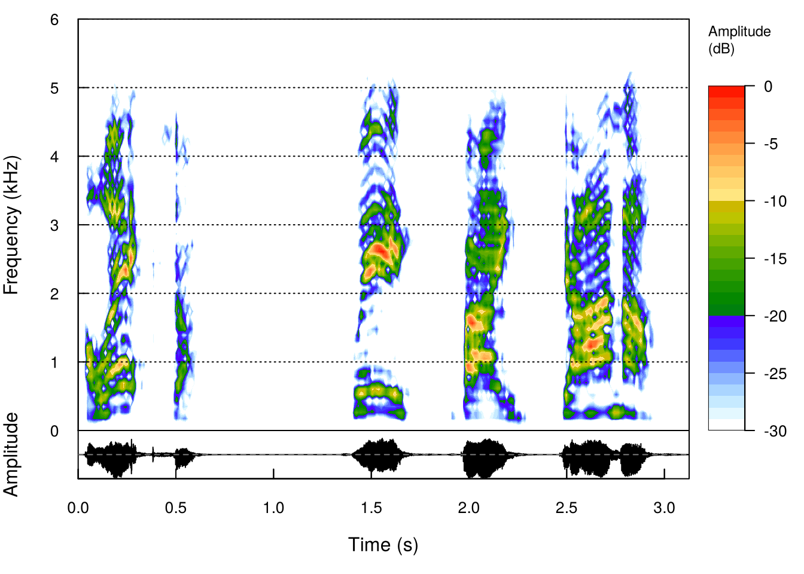
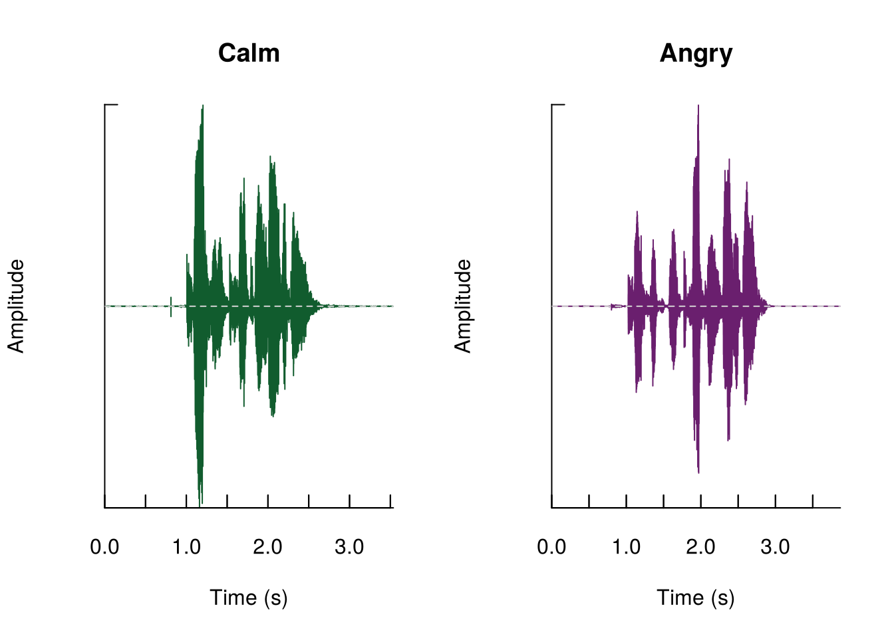
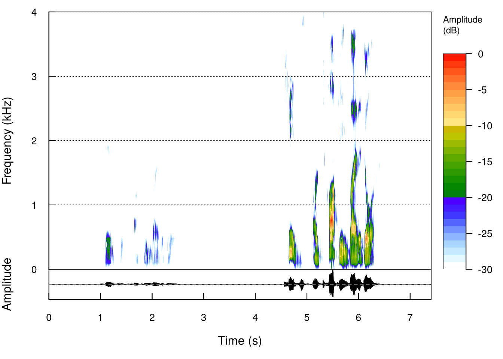
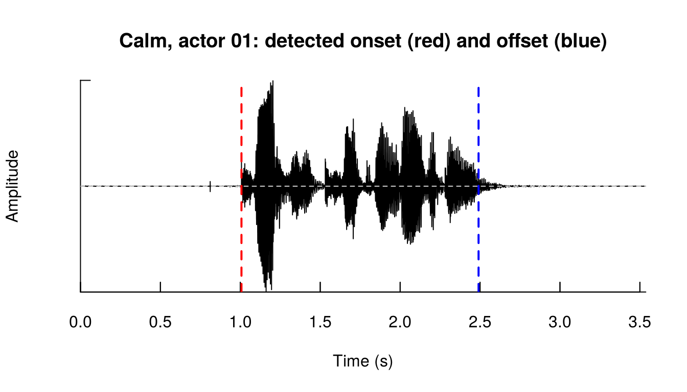
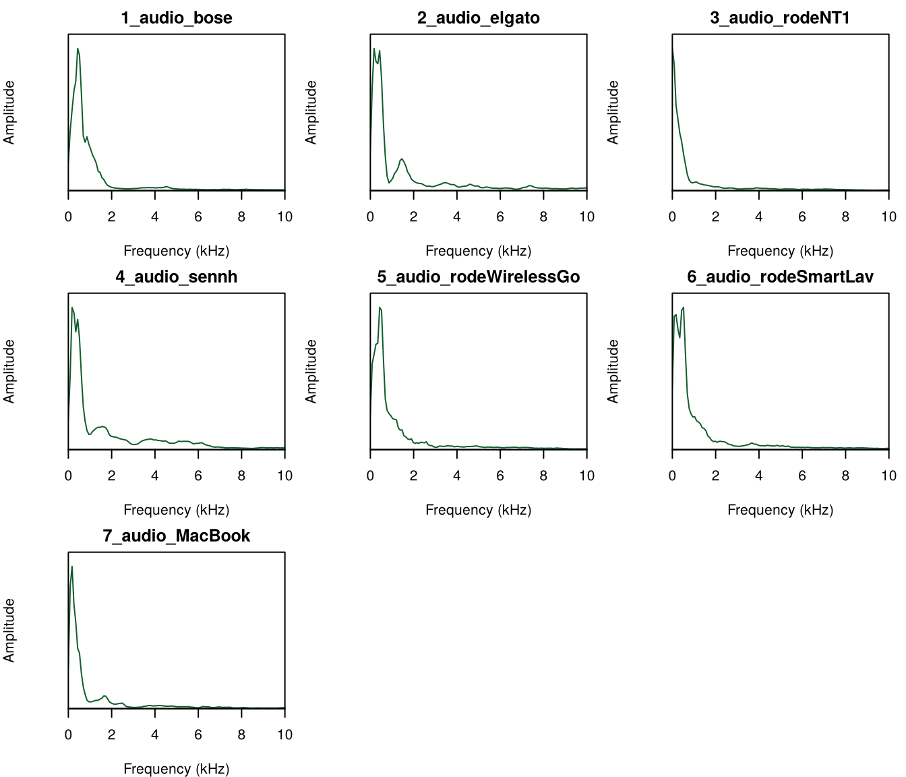

Hands-on Lab: Does Anger Sound Different from Calm?
Listening to Behavior · Voice Analytics Mini-Workshop · University of Melbourne, 11 Nov 2026
Author
Prof. Dr. Christian Hildebrand
How to use this notebook (50 minutes)
This is the compressed, one-afternoon version of the 5-day GSERM voice analytics course. All code is prepared. You run it, read the output, and fill in the chunks marked YOUR TURN. Each exercise has a folded solution: try first, then peek.
Block
Time
What you do
0 · Setup
3′
Load packages, check the audio plays
1 · Warm-up
5′
The Alexa example in R (same files as in Audacity)
2 · Listen & look
8′
Exercise 1: calm vs. angry, side by side and on one scale
3 · Trim
5′
Detect speech onsets and cut silence
4 · Extract & compare
12′
Exercise 2: voiceR::autoExtract() on 32 clips
5 · Predict & break it
10′
Exercise 3: a speaker-independent model on all 192 clips
6 · Bonus
–
Microphones, embeddings, speech-to-text
Not coding today? Read the rendered version of this page on the course website and focus on the interpretation questions.
0 · Setup
Install once (see setup/install_packages.R in the repository; it also handles voiceR, which is currently installed from the CRAN archive).
library(tuneR) # read/write Wave objectslibrary(seewave) # oscillograms, spectrograms, editinglibrary(soundgen) # acoustic feature extractionlibrary(tidyverse) # wrangling and plotslibrary(glmnet) # lasso modelslibrary(pROC) # AUChas_voiceR <-requireNamespace("voiceR", quietly =TRUE)if (has_voiceR) library(voiceR)data_dir <-"../data"# relative to this notebook in lab/theme_set(theme_minimal(base_size =12))pal <-c(Calm ="#115C2E", Angry ="#6A1F6E")has_voiceR
[1] TRUE
Mac users: no sound from listen()?
Run tuneR::setWavPlayer("/usr/bin/afplay") once. On Windows, listen() usually works out of the box.
1 · Warm-up: the frustrated Alexa user
These are the same two commands we just opened in Audacity. Same words, different speaker state.
Wave Object
Number of Samples: 102051
Duration (seconds): 2.31
Samplingrate (Hertz): 44100
Channels (Mono/Stereo): Stereo
PCM (integer format): TRUE
Bit (8/16/24/32/64): 16
cmd2
Wave Object
Number of Samples: 137881
Duration (seconds): 3.13
Samplingrate (Hertz): 44100
Channels (Mono/Stereo): Stereo
PCM (integer format): TRUE
Bit (8/16/24/32/64): 16
# listen(cmd1); listen(cmd2)
par(mfrow =c(2, 1))oscillo(cmd1, colwave ="#115C2E", title ="Command 1")oscillo(cmd2, colwave ="#6A1F6E", title ="Command 2")

spectro(cmd2, flim =c(0, 6), osc =TRUE, dB ="max0")

Look for: the second command is longer, has more breaks between words, and its harmonics sit higher. Those are the cues we will now quantify on a proper dataset.
2 · Listen & look (Exercise 1)
The data
We use the RAVDESS corpus (Livingstone & Russo, 2018). Actors say the same sentence, “Kids are talking by the door”, either calm or angry, at normal or strong intensity, twice. The repository includes the 32 clips of actors 01–04; the precomputed features for all 192 clips (24 actors) are in data/ravdess_features.csv.
RAVDESS encodes the design in the filename, e.g. 03-01-05-01-01-01-12.wav:
ex_calm <-readWave(file.path(emo_dir, "03-01-02-01-01-01-01.wav"))ex_angry <-readWave(file.path(emo_dir, "03-01-05-01-01-01-01.wav"))# listen(ex_calm); listen(ex_angry)par(mfrow =c(1, 2))oscillo(ex_calm, colwave ="#115C2E", title ="Calm")oscillo(ex_angry, colwave ="#6A1F6E", title ="Angry")

Careful: oscillo() and spectro(dB = "max0") scale each clip to its own maximum, so side-by-side plots hide the loudness difference. bind() puts both clips on one shared scale:
spectro(bind(ex_calm, ex_angry), flim =c(0, 4), osc =TRUE, dB ="max0")

Exercise 1 · Listen & look (8 minutes, pairs)
Pick another actor (02, 03 or 04). Plot their calm vs. angry clip side by side, then on one shared scale with bind().
Which cue gives anger away first: amplitude, duration, or where the energy sits in frequency?
Run timer() with threshold = 5 and threshold = 10 on the calm clip. Which onset matches what you hear?
Deliverable: one sentence naming the cue, plus the threshold you would use.
The angry clip has much larger amplitude excursions and more energy above 1 kHz. A low threshold can lock onto low-level noise before speech starts; always check the onset against what you hear.
3 · Trim silence
Every RAVDESS clip starts and ends with silence (roughly half of each file). Silence is not voice, so we cut each clip from the first to the last speech segment found by timer(), keeping a 0.2 s buffer so the last word is not clipped. Never trust a preprocessing step you have not looked at:
t10 <-timer(ex_calm, threshold =10, plot =FALSE)oscillo(ex_calm, colwave ="black", title ="Calm, actor 01: detected onset (red) and offset (blue)")abline(v = t10$s.start[1], col ="red", lwd =2, lty =2)abline(v =tail(t10$s.end, 1), col ="blue", lwd =2, lty =2)

Now trim all 32 clips into data/3_ravdess/processed/ (the raw files stay untouched):
voiceR::autoExtract() runs the full soundgen feature set over a list of recordings and reads the design from the filename. RAVDESS uses - as separator; we tell voiceR which positions hold the condition (emotion) and the speaker ID, and mark the rest Null. With 32 short clips this takes about 1–2 minutes. If voiceR is missing or incompatible with your soundgen version, the chunk falls back to soundgen::analyze(), the engine voiceR uses, and you get the same feature names.
proc_files <-list.files(proc_dir, pattern ="\\.wav$")wav_proc <-set_names(map(proc_files, ~readWave(file.path(proc_dir, .x))),str_remove(proc_files, "\\.wav$"))# Plan B: the soundgen engine that voiceR wraps, one file at a timeextract_soundgen <-function(files, dir) {map_dfr(files, ~analyze(file.path(dir, .x), plot =FALSE,summaryFun =c("mean", "sd"))$summary %>%mutate(file = .x))}feats <-NULLif (has_voiceR) { feats <-tryCatch(suppressWarnings(autoExtract(audioList = wav_proc, fileType ="wav",fileNamePattern ="Null-Null-Condition-Null-Null-Null-ID",sep ="-", extended =TRUE,parallel = parallel::detectCores() >3)), # voiceR uses detectCores() - 2 workerserror =function(e) NULL)if (!is.null(feats) &&nrow(feats) ==length(proc_files)) { feats <- feats %>%mutate(file = proc_files) # same order as wav_proc } else {message("voiceR returned no rows (soundgen >= 3.0 breaks voiceR 0.1.0): using soundgen::analyze() instead.") feats <-NULL }}if (is.null(feats)) feats <-extract_soundgen(proc_files, proc_dir)feats <- feats %>%select(-any_of(c("ID", "Condition"))) %>%left_join(meta, by ="file")dim(feats)
[1] 32 115
Four features from four families, by emotion:
feats %>%select(emotion, pitch_mean, pitch_sd, loudness_mean, HNR_mean) %>%pivot_longer(-emotion) %>%ggplot(aes(emotion, value, fill = emotion)) +geom_boxplot(alpha =0.85, show.legend =FALSE) +facet_wrap(~ name, scales ="free_y", nrow =1) +scale_fill_manual(values = pal) +labs(x =NULL, y =NULL, title ="Calm vs. angry, actors 01-04 (32 trimmed clips)")
Recall the emotion-signature table from the slides: anger should show high F0 and high intensity. Does it here?
Pick two more features from names(feats), one spectral (e.g. specCentroid_mean, entropy_mean) and one temporal (e.g. voiced, duration). Plot them by emotion.
Compute the mean difference (angry − calm) within each actor. Is the effect consistent across all four speakers?
Deliverable: the feature family that separates calm from angry best, and one feature that surprised you.
Pitch and spectral centroid rise and HNR falls (a harsher voice) for all four actors. Loudness is the surprise: it goes up for two actors and down for two. Recording level and normalisation decide what amplitude means, so check that the level was held constant before you interpret it.
5 · Predict & break it (Exercise 3)
Now the full corpus: 192 clips, 24 actors, ~108 features (extracted with exactly the code above on the trimmed files).
Speaker-independent split. If an actor appears in both training and test data, the model can learn the speaker rather than the emotion. We hold out six whole actors (three female, three male).
Which features did the lasso keep? (Coefficients are on each feature’s original scale, so read selection and sign, not size.)
co <-coef(fit, s ="lambda.min")tibble(feature =rownames(co)[-1], coef =as.numeric(co[-1])) %>%filter(coef !=0) %>%arrange(desc(abs(coef))) %>%head(10)
feature
coef
novelty_mean
-86.787700
novelty_sd
-69.451721
amEnvDep_mean
-58.244017
voiced
-34.423406
flux_mean
-23.083837
specSlopeVoiced_mean
-13.351104
specSlope_mean
-8.936269
ampl_mean
-5.673711
subRatio_mean
3.626861
harmEnergy_sd
3.343870
Exercise 3 · Predict & break it (10 minutes, pairs)
Re-run the model with a different seed for the held-out actors. How stable is the AUC?
Break it down: compute AUC separately for female vs. male and for normal vs. strong intensity in the test set.
Discuss: name the first thing that would break if you ran this model on customer-service calls.
Deliverable: your AUC, the weakest subgroup, and one validity threat for field use.
# YOUR TURN ---------------------------------------------------------------# test <- rav[te, ] %>% mutate(prob = prob)# test %>% group_by(sex) %>% summarise(AUC = ...)
Solution: Exercise 3
test <- rav[te, ] %>%mutate(prob = prob, y =as.integer(emotion =="Angry"))sub_auc <-function(d) as.numeric(auc(roc(d$y, d$prob, quiet =TRUE)))bind_rows( test %>%group_by(group = sex) %>%group_modify(~tibble(AUC =sub_auc(.x), n =nrow(.x))), test %>%group_by(group = intensity) %>%group_modify(~tibble(AUC =sub_auc(.x), n =nrow(.x)))) %>%mutate(AUC =round(AUC, 3))
group
AUC
n
Female
0.986
24
Male
1.000
24
Normal
0.986
24
Strong
1.000
24
Near-perfect AUC is expected: this is acted, studio-recorded speech with one fixed sentence. Subtle (normal-intensity) anger is the harder case. In the field, expect different microphones and rooms, spontaneous speech, varying words and accents: validate on that data before making any claim.
6 · Bonus (if you finish early)
Hear the microphone
Same speaker, same text, seven devices (from Busquet, Efthymiou & Hildebrand 2023). Compare the average spectra: which devices roll off the high frequencies?
mic_dir <-file.path(data_dir, "2_micTests")mic_files <-list.files(mic_dir, pattern ="^[0-9]_audio.*\\.wav$")par(mfrow =c(3, 3), mar =c(4, 4, 2, 1))for (f in mic_files) { w <-readWave(file.path(mic_dir, f))if (w@stereo) w <-mono(w, "left")meanspec(w, flim =c(0, 10), main =str_remove(f, "\\.wav$"), col ="#115C2E")}

Acoustic features vs. voice embeddings
data/ravdess_embeddings.csv holds a 768-dimensional embedding per clip from a pre-trained speech model (via talk::talkEmbed() in the full course). Does the black box beat the named features?
emb <-read_csv(file.path(data_dir, "ravdess_embeddings.csv"))dat <- rav %>%left_join(emb, by ="file")emb_cols <-grep("^Dim", names(dat), value =TRUE)run_lasso <-function(cols) { Xm <-as.matrix(dat[, cols]); set.seed(515) f <-cv.glmnet(Xm[tr, ], y[tr], family ="binomial", alpha =1) p <-as.numeric(predict(f, Xm[te, ], s ="lambda.min", type ="response"))round(as.numeric(auc(roc(y[te], p, quiet =TRUE))), 3)}tibble(representation =c("Acoustic features", "Embeddings", "Both"),test_AUC =c(run_lasso(feat_cols), run_lasso(emb_cols), run_lasso(c(feat_cols, emb_cols))))
representation
test_AUC
Acoustic features
0.995
Embeddings
1.000
Both
1.000
Speech-to-text (needs an OpenAI API key)
library(openai)Sys.setenv(OPENAI_API_KEY ="YOUR-KEY") # never commit your keycreate_transcription(file =file.path(data_dir, "1_alexa/alexa_cmd2.wav"), model ="whisper-1")$text
References
Busquet, F., Efthymiou, F., & Hildebrand, C. (2023). Voice analytics in the wild: Validity and predictive accuracy of common audio-recording devices. Behavior Research Methods.
Hildebrand, C., Efthymiou, F., Busquet, F., Hampton, W. H., Hoffman, D. L., & Novak, T. P. (2020). Voice analytics in business research: Conceptual foundations, acoustic feature extraction, and applications. Journal of Business Research, 121, 364–374.
Livingstone, S. R., & Russo, F. A. (2018). The Ryerson Audio-Visual Database of Emotional Speech and Song (RAVDESS). PLoS ONE, 13(5), e0196391. Data: https://doi.org/10.5281/zenodo.1188976 (CC BY-NC-SA 4.0).